点击任意处关闭
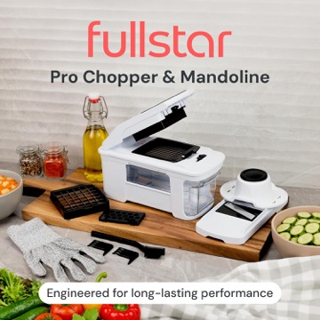
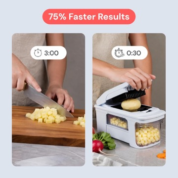
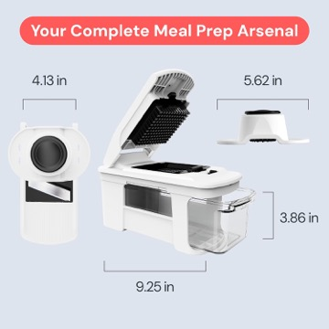
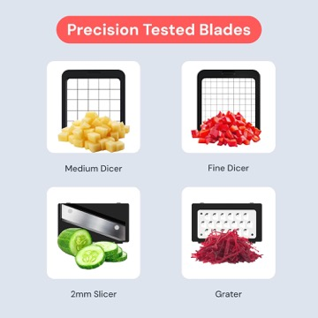
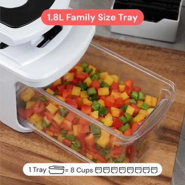
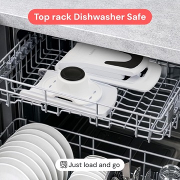
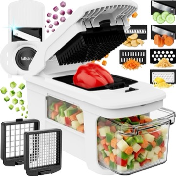
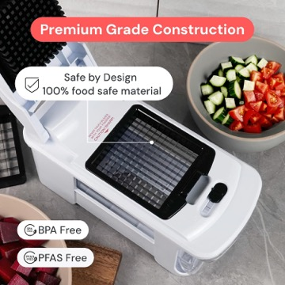
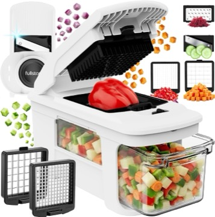
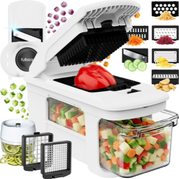
| # | 画面 | AI 生成图 | 英文旁白（=字幕） | 时间 |
|---|---|---|---|---|
| S1 | 手切洋葱·流泪痛点 | 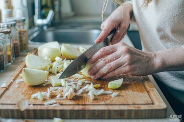 | "Chopping onions by hand? Three minutes, messy, and lots of tears." | 0.0-6.8s |
| S2 | 白棚产品登场 | 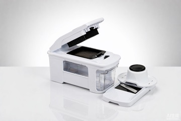 | "Meet the Fullstar Pro XL." | 6.8-9.8s |
| S3 | 压切洋葱丁入盒 | 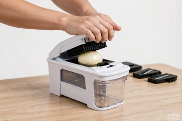 | "Press down — perfect onion dices in seconds." | 9.8-13.4s |
| S4 | 换刀切土豆条 | 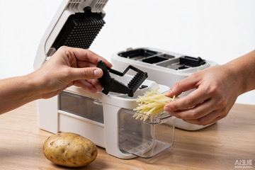 | "Swap the blade — crisp potato fries-style sticks." | 13.4-17.5s |
| S5 | 分屏对比：手切 3 分钟 vs 切碎器 30 秒 | 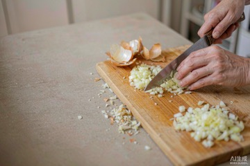 | "Three minutes by hand — thirty seconds with Fullstar. That's seventy-five percent faster." | 17.5-25.1s |
| S6 | 暗底卖点卡 | 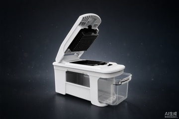 | "Four interchangeable blades. No mess, no tears." | 25.1-30.7s |
| S7 | 水槽冲洗 | "Everything rinses clean in seconds." | 30.7-34.0s | |
| S8 | 定版 + SHOP NOW | "Fullstar Pro XL — chop faster today." | 34.0-37.4s |
| 项目 | 用量 | 成本 |
|---|---|---|
| AI 生成图片 | 11 张（含 2 张翻车重做） | ≈ ¥3-8 |
| AI 生成视频 | 8 段 720P | ≈ ¥10-15 |
| AI 配音 | 61 词英文女声 | ≈ ¥0.05 |
| 剪辑合成 | 全自动脚本渲染 | ¥0 |